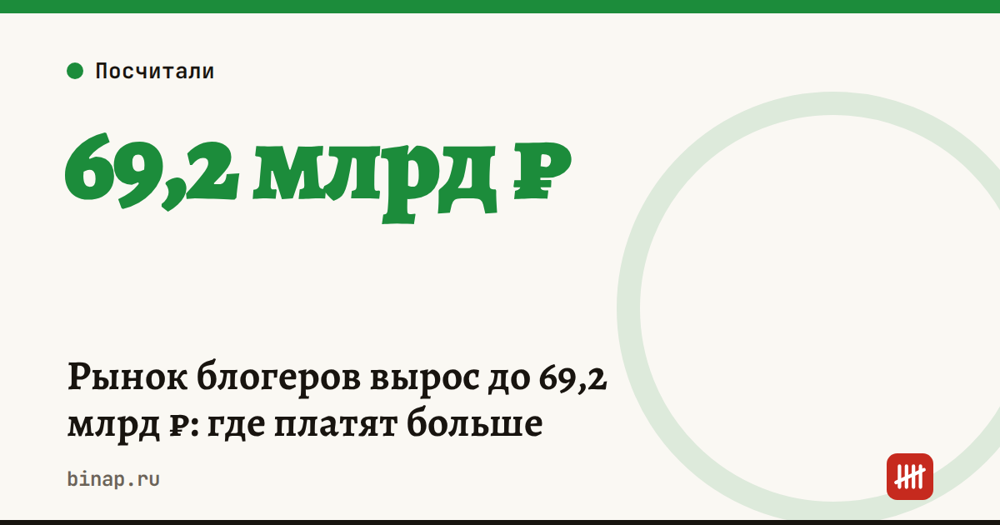

Рынок блогеров вырос до 69,2 млрд ₽: где платят больше

Рынок рекламы у блогеров в России в 2025 году вырос почти на пятую часть. По данным Клерка, АКАР оценила его в 69,2 млрд ₽. Рассказываем, куда ушли деньги и как использовать эти цифры, если вы сами думаете о рекламе у блогеров.
Коротко
- Объём рынка — 69,2 млрд ₽, на 19,4% больше, чем в 2024 году (58 млрд ₽).
- YouTube и Telegram вместе собрали около двух третей бюджетов.
- Это расчётная оценка АКАР по медианным ценам и данным WhoIsBlogger, а не аудит площадок.
- Для малого бизнеса важна не доля площадки на рынке, а стоимость клиента с конкретного блогера.
- Реклама у блогера — это реклама: нужны маркировка и erid, а у блогеров с аудиторией от 10 тыс. подписчиков — регистрация в реестре Роскомнадзора.
Сроки, изменения и разборы для ИП и самозанятых — каждое утро в Telegram и MAX. Подпишитесь, чтобы не пропустить.
Рынок в цифрах
| Площадка | Бюджеты 2025, млрд ₽ | Доля |
|---|---|---|
| YouTube | 23,97 | 34,6% |
| Telegram | 21,97 | 31,7% |
| VK | 10,38 | 15,0% |
| Instagram (деятельность Meta в России запрещена) | 10,32 | 14,9% |
| TikTok | 1,92 | 2,8% |
| Rutube | 0,66 | 1,0% |
Доли VK, Instagram, TikTok и Rutube — расчёт редакции от общего объёма 69,2 млрд ₽. Оценка учитывает аккаунты конкретных людей на шести площадках; безликие паблики, медиа и агрегаторы в неё не вошли.
Как выбрать блогера и посчитать отдачу
Расчёт редакции: две интеграции по 30 000 ₽.
| Блогер А | Блогер Б | |
|---|---|---|
| Переходов по ссылке с utm-меткой | 600 | 250 |
| Покупок | 12 | 15 |
| Стоимость клиента | 2 500 ₽ | 2 000 ₽ |
У блогера А больше переходов, но клиент у блогера Б дешевле. Сравнивайте стоимость клиента, а не охват. Если клиент приносит прибыль меньше стоимости его привлечения, реклама убыточна.
Что сделать перед размещением
- Проверьте, что блогер с аудиторией от 10 тыс. подписчиков есть в реестре Роскомнадзора: размещать рекламу у незарегистрированных нельзя.
- Договоритесь, кто маркирует рекламу и получает erid, и пропишите это в договоре.
- Дайте блогеру ссылку с utm-меткой или промокод, чтобы считать покупки.
- Выпишите, сколько уже потратили на блогеров и сколько клиентов пришло с каждой площадки.
- Начните с одной-двух пробных интеграций, а не с большого пакета.
Как посчитать, на каком этапе вы теряете клиентов после перехода, — в статье воронка продаж для малого бизнеса. Что меняется с рекламой в собственном канале — в статье реклама в Telegram.
Частые вопросы
Сколько стоит рынок рекламы у блогеров в России? По оценке АКАР, 69,2 млрд ₽ в 2025 году — на 19,4% больше, чем годом раньше.
Какая площадка собрала больше всего бюджетов? YouTube — 23,97 млрд ₽, на втором месте Telegram — 21,97 млрд ₽.
Нужно ли маркировать рекламу у блогера? Да. Реклама у блогеров маркируется: пометка «Реклама», сведения о рекламодателе и erid.